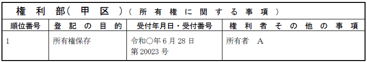
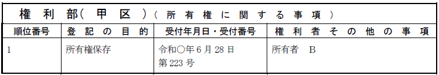
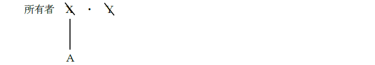
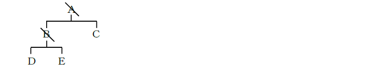
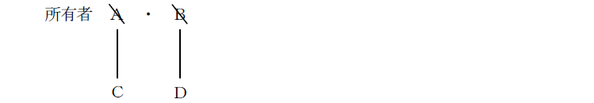
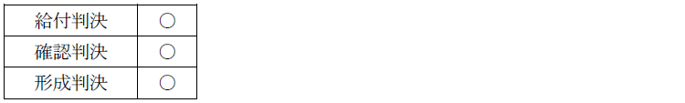
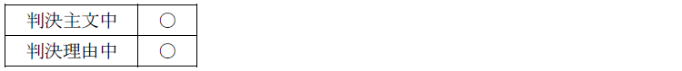
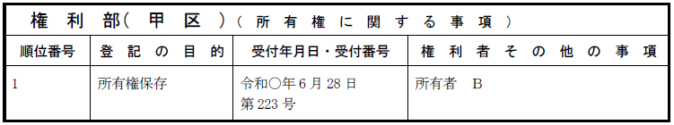

第１編 各 論
第１章 所有権の登記
第１節 所有権保存の登記
権利部に登記をするには、まず「所有権保存登記」を入れなければならない。
所有権の保存の登記は、次に掲げる者以外の者は、申請することができない（74条1項）。これらの者は、所有者であることが確実だからである。
① 表題部所有者又はその相続人その他の一般承継人（1号）
② 所有権を有することが確定判決によって確認された者（2号）
③ 収用によって所有権を取得した者（3号）
※②③の場合、表題部がまだ作成されていない段階で、所有権保存の登記を申請することができる。この場合には、登記官が職権で表題部を作成する。
④ 区分建物の表題部所有者から所有権を取得した者（74条2項前段）
※2項は、敷地権付き区分建物でない区分建物も含む
1. 登記原因日付がない
登記原因といえるような法律行為がないため、表示しない（76条1項本文。敷地権付区分建物の74条2項保存登記は例外）。
2. 登記原因証明情報は添付不要
登記原因がないからである（敷地権付区分建物の74条2項保存登記は例外）。
3. 登記識別情報、印鑑証明書は添付不要
単独申請のため、これらは不要である。
4. 根拠法令（申請根拠条項）の記載
申請人が申請適格者であることを示すために、申請書に根拠法令（申請根拠条項）を表示する必要がある（不登令別表28申請情報イ）。
5. 持分のみの所有権保存登記は不可
共有者の1人又は数人は、表題部所有者全員の名義で保存登記を申請することができる（明33.12.18民刑1661）。保存行為に当たるからである（民法252条5項）。
また、表題部所有者の共同相続人の１人は、自己の持分のみについて、74条1項1号後段の所有権保存登記を申請することはできない（明32.8.8民刑1311）。この場合も、共同相続人全員の名義で保存登記を申請することができる。
【申請例2 所有権保存 不動産登記法74条1項1号前段の申請】
事例： Ａが、自分の土地上に家を建てた（当該建物の表示の登記は、なされている。）。Ａは、司法書士に登記の申請を依頼し、令和○年6月28日に、登記の申請がされた。建物の課税標準の額は、金1000万円である。

1. 申請情報の内容
(1) 登記原因及びその日付
登記原因といえるような法律行為がないため、表示しない（76条1項本文）。
(2) 申請人
表題部所有者
(3) 添付情報
・住所証明情報（不登令別表28添付情報ニ）
①虚無人名義の登記を防止するため、②現在の正しい住所で登記するために提供する。
死者名義で所有権の保存又は移転の登記を書面により申請する場合には、その者の最後の住所を証する情報として住民票の除票を提供する必要がある（昭41.2.12民甲369）。
2. 登記申請の可否
(1) 区分建物でない建物について、表題部所有者から売買により所有権を取得（=特定承継）した者は、自己の名義で所有権保存登記をすることはできない。
①表題部所有者が死亡していても同様である（登研383P.92）。
②この場合、法定相続人が表題部所有者を登記名義人とする所有権保存の登記を申請してから、所有権移転登記を申請しなければならない。
※表題部所有者の相続人は、相続により当該不動産の所有権を取得しないので、自己名義で所有権保存の登記をすることはできない。
③所有権の登記のない土地について、その表題部所有者Ａが当該土地の所有権の一部をＢに譲渡し、Ａ及びＢの共有に属することとなった場合であっても、Ａ及びＢを共有名義人とする所有権の保存の登記を申請することはできない。
(2) Ａを表題部所有者とする表題登記がされた日の後であって、かつ、Ａを所有権の登記名義人とする所有権の保存の登記がされた日の1年前である日を登記原因の日付として、ＡからＢへの所有権の移転の登記を申請することができる。
所有権保存登記においては登記原因が申請情報の内容とはなっておらず、それゆえ、登記記録上に原因日付が記録されることもない。そのため、所有権移転登記の原因日付との関係で矛盾を生じることもないからである。
表題部所有者の相続人その他の一般承継人とは、自然人の場合の相続人のほか、法人の場合の吸収合併存続会社及び新設合併設立会社がこれに当たる（明40.1.14民刑1414）。
【申請例3 所有権保存 74条1項1号後段の申請】
事例： Ａが、自分の土地の上に家を建てた（当該建物の表示の登記は、なされている。）。その後、Ａが死亡した。Ａの相続人は、Ｂのみである。Ｂは、司法書士に登記の申請を依頼し、令和○年6月28日に登記の申請がなされた。建物の課税標準の額は、金1000万円である。

1. 申請情報の内容
(1) 申請人
表題部所有者の相続人その他の一般承継人
(2) 添付情報
①相続証明情報（不登令別表28添付情報イ）
具体的には、戸籍謄本等がこれに当たる。
②住所証明情報を提供する（不登令別表28添付情報ニ）。
(3) 適用法令
所有権保存登記であるから、根拠法令を表示する（不登令別表28申請情報イ）。
2. 登記申請の可否
(1) 表題部所有者Ｘ・Ｙがともに死亡している場合において、Ｘの相続人Ａは、亡Ｘ・亡Ｙを登記名義人とする所有権保存登記を申請することができるか？また、登記名義人をＡ・亡Ｙとする所有権保存登記を申請することはできるか？

→ いずれもできる（昭36.9.18民甲2323）。
(2) 表題部に記録されている所有者が死亡して相続が開始した場合、直接相続人名義に保存の登記をすることができるが、被相続人名義で所有権保存登記をした後に、相続人名義で相続を登記原因とする所有権移転の登記を申請することができるか？
→ できる（昭32.10.18民甲1953）。表題部所有者は、死亡しているが、不動産登記法74条1項1号前段の申請適格者であるため、表題部所有者名義で所有権保存の登記をすることも問題ない。
(3) 数次に相続があったときでも、直接、現在の相続人名義で所有権保存の登記を申請することができるか？
→ できる（登研443P.93）。
(4) 表題部所有者をＡとする所有権の登記のない不動産について、Ａが死亡してＢ及びＣがＡを相続した後、さらにＢが死亡してＤ及びＥがＢを相続したときは、Ｃ、Ｄ及びＥは、Ｃ、Ｄ及びＥを共有名義人とする所有権保存の登記を申請することができるか？

→ できる（登研407P.85）。中間が共同相続であっても、現在の相続人名義での所有権保存の登記を申請することができる。所有権移転の登記の場合には、中間が単独相続であるときに限られることに注意が必要。
(5) 表題部所有者をＡ及びＢとする所有権の登記のない不動産について、Ａ及びＢがともに死亡し、ＣがＡを相続し、ＤがＢを相続したときに申請する所有権保存の登記は、①亡Ａ・亡Ｂ名義、②亡Ａ・Ｄ名義、③Ｃ・亡Ｂ名義、④Ｃ・Ｄ名義のいずれの名義により申請すべきか？

→ ①～④のいずれの名義でも申請することができる（昭36.9.18民甲2323）。亡Ａ及び亡Ｂ名義での申請は、表題部所有者として（74条1項1号前段）、保存登記を申請することができ、この場合、Ａ・Ｂは死亡しているため、一般承継人による申請（62条）となる。Ｃ及びＤ名義での申請は、表題部所有者の一般承継人として（74条1項1号後段）申請することができる。
(6) 表題部の所有者から包括遺贈を受けた者であっても、所有権保存の登記を申請することができるか？
→ できない（登研223P.67）。
所有権を有することが確定判決によって確認された者は、自己名義で所有権保存の登記を申請することができる（74条1項2号）。
1. 判決等の内容
(1) 判決の種類
判決は、確定していなければならないが、判決の種類には制限がない（昭55.11.24民3.6757参照）申請人が所有権を有していることが判決によって確認することができれば足り、相手方の登記申請の意思表示を擬制する必要はないからである。

【給付判決の例】「Ａは、Ｂに対して、別紙物件目録記載の土地について、◯年◯月◯日売買を原因とする所有権移転登記手続をせよ。」
【確認判決の例】「別紙物件目録記載の土地について、Ａが所有権を有することを確認する。」
【形成判決の例】「ＡとＢとを離婚する。」
(2) 所有権の確認の記載

(3) 確定判決と同一の効力を有するもの
不動産登記法74条1項2号の所有権保存の登記は、確定判決だけではなく、確定判決と同一の効力を有する和解、調停によって申請することもできる（不登令別表28添付情報ロ参照）。
ｅｘ．所有権の登記がない建物について、表題部所有者ＡがＢに対して当該建物を贈与する旨の民事調停が成立した場合には、Ｂは、当該調停に係る調停調書を提供して、直接Ｂを所有権の登記名義人とする所有権の保存の登記を申請することができる。
【申請例4 所有権保存 不動産登記法74条1項2号の申請】
事例： Ａが、自分の土地の上に家を建てた（当該建物の表示の登記は、なされている。）。Ａは、Ｂに当該建物を売却したが、登記手続に応じないまま死亡した。Ｂは、当該建物所有権が自己にあるとして、Ａの唯一の相続人Ｃを相手に所有権移転登記請求手続を求める訴えを提起し、勝訴した。Ｂは、司法書士に登記の申請を依頼し、令和○年6月28日に登記の申請がなされた。建物の課税標準の額は、金1000万円である。

2. 申請情報の内容
(1) 登記原因及びその日付
登記原因といえるような法律行為がないため、表示しない（76条1項本文）。
(2) 添付情報
①所有権確認証明情報（不登令別表28添付情報ロ）
所有権を有することが確定判決（確定判決と同一の効力を有するものを含む。）によって確認されたことを証する情報を提供する（不登令別表28添付情報ロ）。
②住所証明情報（不登令別表28添付情報ニ）
※登記原因証明情報の提供を要しない（不登令7条3項1号）。
(3) 適用法令
所有権保存登記であるから、根拠法令を表示する（不登令別表28申請情報イ）。
3. 登記申請の可否
(1) 不動産登記法74条1項2号の規定により、自己名義で所有権の保存登記を受けるために申請情報に添付すべき判決における被告の記載は、表題部に所有者として記載されている者が複数いる場合には、全員でなければならないか？それとも、そのうちの1人で足りるか？
→ 全員でなければならない（平10.3.20民3.552）。
表題部所有者が死亡している場合に、その相続人が複数いるときは、その全員を被告としなければならない。
なお、表示の登記がされていない不動産であっても、確定判決により自己の所有権が確認された者は、所有権保存の登記を申請することができる（75条参照）。この場合には、登記官の職権により建物の表題登記がなされるが、所有者に関する事項は記録することを要しないとされている（75条、不登規157条1項1号参照）。
(2) 所有権移転登記を命じる判決が確定した場合でも、所有権保存の登記を申請することができるか？
→ できる（大判大15.6.23、登研140P.44）。
所有権移転登記を命じる判決であっても、所有者であることを確認されたことにはかわりはないからである。
ex． 土地の登記記録の表題部にＡが所有者として記録されている場合において、Ｂがその土地について｢Ａは、Ｂに対し、所有権保存登記をした上で、所有権移転登記手続をせよ｡｣との確定判決を得たときは、Ｂは、自らを名義人とする所有権保存登記を申請することができる。
収用によって所有権を取得した者は、自己名義で所有権保存の登記を申請することができる（74条1項3号）。
1. 申請情報の内容
(1) 登記原因及びその日付
登記原因といえるような法律行為がないため、表示しない（76条1項本文）。
(2) 添付情報
①所有権取得証明情報（不登令別表28添付情報ハ）
収用によって所有権を取得したことを証する情報（収用の裁決が効力を失っていないことを証する情報を含むものに限る。）を提供する（不登令別表28添付情報ハ）。
②住所証明情報（不登令別表28添付情報ニ）
(3) 適用法令
「法第74条第1項第3号申請」と記載する。
2. 登記申請の可否
表題登記がない建物の所有権を収用によって取得した者は、表題登記の申請をすることなく、建物図面及び各階平面図を提供して、直接自己を登記名義人とする所有権の保存の登記を申請することができるか？
→できる（75条、不登令7条1項6号、不登令別表28添付情報欄ヘ）。